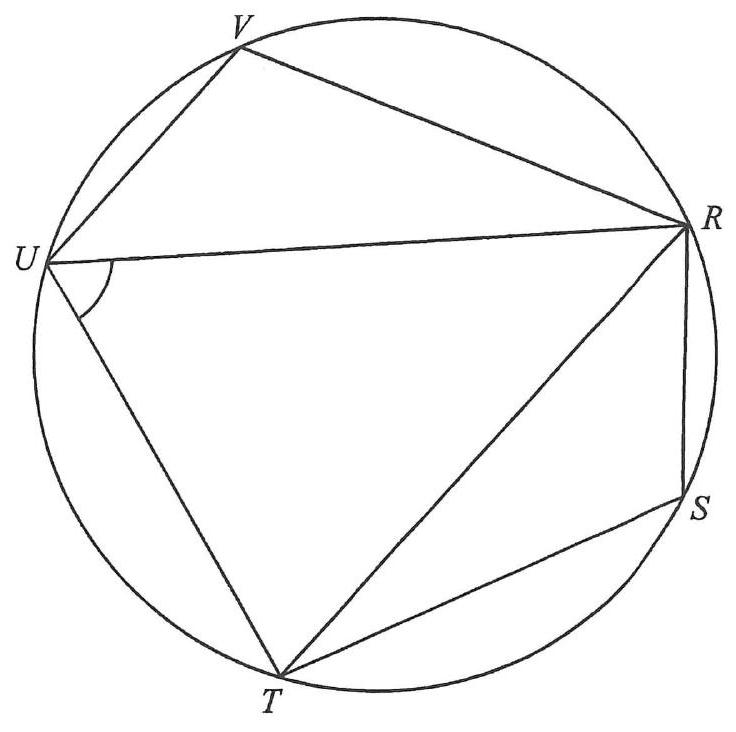

CircleChord / sideAngle bisector $RT$Parallel $VU // RT$VertexAngle marks
Question
2025 MC #22
In the figure, $UVRS$ is a cyclic quadrilateral. It is given that
$VU // RT$ and $RT$ is the angle bisector of $\angle S RU$.
If $\angle VRT = 33^\circ$, then $\angle RUT =$
A. $33^\circ$
B. $57^\circ$
C. $71^\circ$
D. $76^\circ$
Hints. Let $\angle RUT = x$ and $\angle URT = \angle SRT = y$
(angle bisector). Use: alternate angles with $VU // RT$, opposite angles of a
cyclic quadrilateral, and angle sum of a triangle.

Figure (original exam diagram)
Step 1 · Set up the unknowns
Let the two unknown angles be
$$\angle RUT = x \qquad \text{and} \qquad \angle URT = \angle SRT = y .$$
$RT$ bisects $\angle SRU$, so the two angles at $R$ on either side of $RT$ are equal.
Step 2 · Alternate angles ($VU // RT$)
Since $VU // RT$, the alternate angles are equal:
$$\angle VUR = \angle URT = y .$$
Alternate angles, $VU // RT$.
Step 3 · Opposite angles of cyclic quad $UVRT$
Alternate Angles\(\angle VUR=\angle URT\)\(VU // RT\), so the alternate angles formed with transversal \(UR\) are equal.
In the cyclic quadrilateral $UVRT$, opposite angles sum to $180^\circ$:
$$\angle VUT + \angle VRT = 180^\circ .$$
Now $\angle VUT = \angle VUR + \angle RUT = y + x$, and $\angle VRT = 33^\circ$, so
$$x + y + y + 33^\circ = 180^\circ$$
$$x + 2y = 147^\circ \quad \cdots (1)$$
Step 4 · Opposite angles of cyclic quad $URST$
Opposite Angles of a Cyclic Quadrilateral\(\angle VUT+\angle VRT=180^{\circ}\)Opposite angles of a cyclic quadrilateral are supplementary.
In the cyclic quadrilateral $URST$, opposite angles sum to $180^\circ$:
$$\angle RST + \angle RUT = 180^\circ$$
$$\angle RST = 180^\circ - x .$$
Opposite angles of a cyclic quadrilateral.
Step 5 · Angle sum of $\triangle RST$
In $\triangle RST$, the three angles add to $180^\circ$:
$$(180^\circ - x) + y + 33^\circ = 180^\circ$$
$$-x + y + 33^\circ = 0$$
$$x - y = 33^\circ \quad \cdots (2)$$
Step 6 · Solve the simultaneous equations
Angle Sum of a Triangle\(\angle RST+\angle SRT+\angle RTS=180^{\circ}\)The three angles of \(\triangle RST\) add to \(180^{\circ}\), giving the second equation.
From (1) and (2):
$$x + 2y = 147^\circ$$
$$x - y = 33^\circ$$
Subtracting gives $3y = 114^\circ$, so
$$y = 38^\circ \qquad \text{and} \qquad x = 71^\circ .$$
Step 7 · Conclusion
Therefore
$$\angle RUT = x = 71^\circ .$$
Answer
C. $\;71^\circ$
PRACTICESimilar question — try it yourself
Question. In the figure, \(ABCD\) is a cyclic quadrilateral with \(AD // BC\). If \(\angle BAC=32^{\circ}\) and \(\angle ACD=46^{\circ}\), find \(\angle ABC\).
Show the worked solution
Step 1. Let \(\angle ACB=u\). Since \(AD // BC\), the alternate angles give \(\angle DAC=\angle ACB=u\).
Step 2. Then \(\angle DAB=32^{\circ}+u\), and opposite angles of the cyclic quadrilateral give \(\angle DCB=180^{\circ}-(32^{\circ}+u)=148^{\circ}-u\).
Step 3. But \(\angle DCB=\angle DCA+\angle ACB=46^{\circ}+u\), so \(46^{\circ}+u=148^{\circ}-u\), giving \(2u=102^{\circ}\) and \(u=51^{\circ}\).
Step 4. In \(\triangle ABC\): \(\angle ABC=180^{\circ}-32^{\circ}-51^{\circ}=97^{\circ}\).
Step 5. Check: \(\angle ADC=180^{\circ}-97^{\circ}=83^{\circ}\), and in \(\triangle ACD\), \(46^{\circ}+51^{\circ}+83^{\circ}=180^{\circ}\) ✓